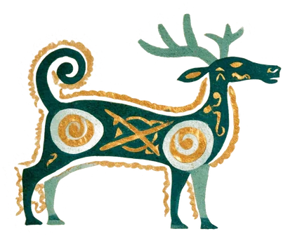
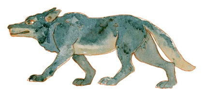
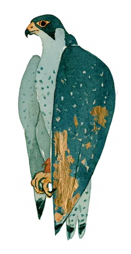
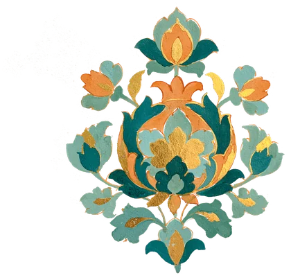
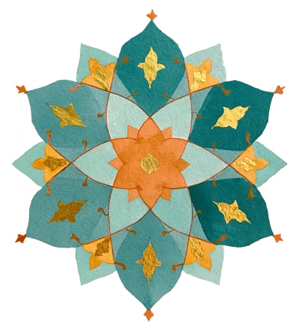
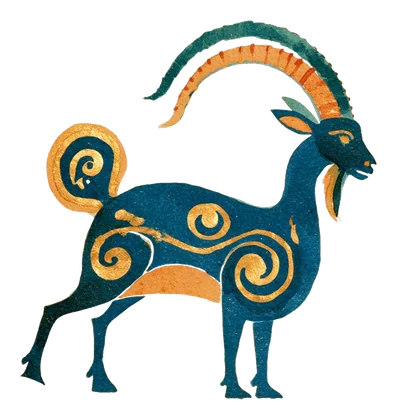

Tarihî ve çağdaş Türkçe metinlerde tanık arayın
Çevriyazı harflerini klavyeden ya da aşağıdaki tuşlardan yazın; her sonuç kaynak sayfasına ve Türkçe çevirisine bağlıdır.
Enter ile arayın · kısa yol e: ė n: ŋ h: ḫ